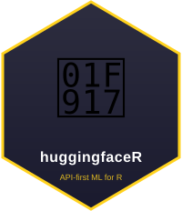

Structured Extraction and Tool Calling
Source:vignettes/structured-extraction-and-tools.Rmd
structured-extraction-and-tools.RmdWhy structured output matters
Chat models are useful for summarizing messy text, but analysis
usually needs columns. hf_extract() asks a chat model for
JSON that conforms to a schema and returns one tidy row per input.
notes <- c(
"Amelie is a chef in Paris who mentions burnout.",
"Jordan is a nurse in Seattle who mentions staffing."
)
hf_extract(
notes,
c(name = "string", occupation = "string", city = "string", theme = "string"),
max_tokens = 120
)
#> # A tibble: 2 × 4
#> name occupation city theme
#> <chr> <chr> <chr> <chr>
#> 1 Amelie chef Paris burnout
#> 2 Jordan nurse Seattle staffingThe lightweight schema form is enough for many workflows. Use a full JSON Schema list when you need enums, descriptions, or nested objects.
schema <- list(
type = "object",
properties = list(
name = list(type = "string"),
sentiment = list(type = "string", enum = c("positive", "neutral", "negative")),
urgency = list(type = "number")
),
required = c("name", "sentiment", "urgency"),
additionalProperties = FALSE
)
hf_extract("Priya needs help today but likes the program.", schema)
#> # A tibble: 1 × 3
#> name sentiment urgency
#> <chr> <chr> <dbl>
#> 1 Priya positive 1Tool definitions
hf_tool() builds OpenAI-compatible function definitions
for models/providers that support tool calling. The default chat model
is chosen for easy first calls; for tools, use a tool-capable model such
as Qwen/Qwen2.5-72B-Instruct.
add_tool <- hf_tool(
"add",
"Add two numbers.",
c(x = "number", y = "number")
)
res <- hf_chat(
"Use the add tool to add x=2 and y=3.",
model = "Qwen/Qwen2.5-72B-Instruct",
tools = list(add_tool),
tool_choice = "auto",
temperature = 0
)
res$tool_calls
#> [[1]]
#> [[1]][[1]]
#> [[1]][[1]]$id
#> [1] "call_XKeOAfSqpmoevW1BwdOUIV7D"
#>
#> [[1]][[1]]$type
#> [1] "function"
#>
#> [[1]][[1]]$`function`
#> [[1]][[1]]$`function`$name
#> [1] "add"
#>
#> [[1]][[1]]$`function`$arguments
#> [1] "{\"x\": 2, \"y\": 3}"Running tools in a conversation
hf_run_tools() executes tool calls requested by the
assistant, appends tool result messages, and asks the model for the
final answer.
convo <- hf_conversation(model = "Qwen/Qwen2.5-72B-Instruct")
convo <- chat(
convo,
"Use the add tool to add x=2 and y=3, then tell me the answer.",
tools = list(add_tool),
tool_choice = "auto",
temperature = 0
)
convo <- hf_run_tools(
convo,
list(add = function(x, y) x + y),
temperature = 0
)
convo$history
#> [[1]]
#> [[1]]$role
#> [1] "user"
#>
#> [[1]]$content
#> [1] "Use the add tool to add x=2 and y=3, then tell me the answer."
#>
#>
#> [[2]]
#> [[2]]$role
#> [1] "assistant"
#>
#> [[2]]$content
#> [1] ""
#>
#> [[2]]$tool_calls
#> [[2]]$tool_calls[[1]]
#> [[2]]$tool_calls[[1]]$id
#> [1] "call_KYbZAodXJqAjyrt3MR9hEHFC"
#>
#> [[2]]$tool_calls[[1]]$type
#> [1] "function"
#>
#> [[2]]$tool_calls[[1]]$`function`
#> [[2]]$tool_calls[[1]]$`function`$name
#> [1] "add"
#>
#> [[2]]$tool_calls[[1]]$`function`$arguments
#> [1] "{\"x\": 2, \"y\": 3}"
#>
#>
#>
#>
#>
#> [[3]]
#> [[3]]$role
#> [1] "tool"
#>
#> [[3]]$tool_call_id
#> [1] "call_KYbZAodXJqAjyrt3MR9hEHFC"
#>
#> [[3]]$name
#> [1] "add"
#>
#> [[3]]$content
#> [1] "5"
#>
#>
#> [[4]]
#> [[4]]$role
#> [1] "assistant"
#>
#> [[4]]$content
#> [1] "The answer is 5."Streaming callbacks
Set stream = TRUE to receive deltas as they arrive. When
callback is omitted, deltas print to the console.
pieces <- character()
answer <- hf_chat(
"Reply with exactly: OK",
stream = TRUE,
callback = function(delta) pieces <<- c(pieces, delta),
temperature = 0,
max_tokens = 8
)
paste0(pieces, collapse = "")
#> [1] "OK"
answer
#> # A tibble: 1 × 5
#> role content model tokens_used tool_calls
#> <chr> <chr> <chr> <dbl> <list>
#> 1 assistant OK meta-llama/Llama-3.1-8B-Instruct 1 <list [0]>